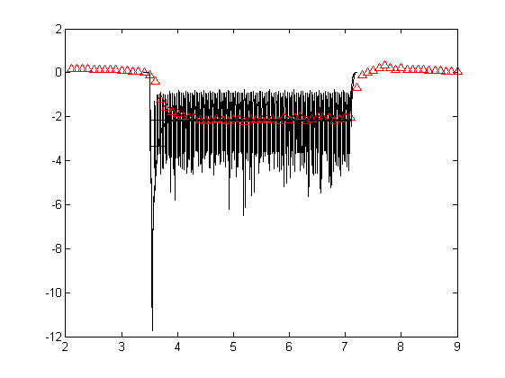

Hunting down the MOC time constant
This is a little script made to hunt down the MOC time constant based on the very limited data that we have. MOC data is scaled and then overlayed upon the data.
obj.MAProot = fullfile('..'); addpath(...fullfile(obj.MAProot, 'modules'),... fullfile(obj.MAProot, 'utilities'),... fullfile(obj.MAProot, 'MAP'),... fullfile(obj.MAProot, 'parameterStore'),... fullfile('ASR files')); close all; clear all; clc; sr = 44100; dt = 1/sr; dur = 3.6; freq = 1000; nn=0; % for levelSPL = 0:10:100; levelSPL = 60; SNR = 10; preDur = .1; nn = nn+1; levelRec(nn) = levelSPL; tAxis = dt:dt:dur; ipSig = sin(2*pi*freq*tAxis); ipSig = ipSig./sqrt(mean(ipSig.^2)); ipSig = ipSig * 20e-6 * 10 ^ (levelSPL/20); preS = ceil(preDur*sr); ipSig = [zeros(preS, 1)' ipSig zeros(preS, 1)']; for kk = [0.005 0.010 0.020] for jj = 0.05:0.05:0.05 paramChanges = {}; paramChanges{numel(paramChanges)+1} = ['DRNLParams.rateToAttenuationFactorProb = ' num2str(kk) ';'];%FIX = -10^(-10/20); %GOOD = 0.012 %DEFAULT = 0.005; % strength of MOC paramChanges{numel(paramChanges)+1} = 'DRNLParams.MOCrateThresholdProb = 60;';%GOOD=140 %DEFAULT = 70; paramChanges{numel(paramChanges)+1} = 'OMEParams.rateToAttenuationFactorProb = 0;';%DEFAULT = 0.01; paramChanges{numel(paramChanges)+1} = 'DRNLParams.a=1e4;'; %DEFAULT = 5e4; paramChanges{numel(paramChanges)+1} = ['DRNLParams.MOCtau =' num2str(jj) ';']; AN_spikesOrProbability = 'probability'; MAP1_14(ipSig, sr, -1, 'Normal', AN_spikesOrProbability, paramChanges) % options.showEfferent=1; % UTIL_showMAP(options) % drawnow global MOCattenuation chanID = find(mean(MOCattenuation,2) == min(mean(MOCattenuation,2)), 1); pAxis = 2:0.1:9; pData = [0.200000000000000,0.190000000000000,0.180000000000000,0.180000000000000,0.160000000000000,0.150000000000000,0.150000000000000,0.150000000000000,0.120000000000000,0.120000000000000,0.100000000000000,0.100000000000000,0.0500000000000000,0.0500000000000000,0,-0.100000000000000,-0.400000000000000,-1.20000000000000,-1.60000000000000,-1.80000000000000,-1.85000000000000,-2,-2.05000000000000,-2.05000000000000,-2.15000000000000,-2.20000000000000,-2.15000000000000,-2.10000000000000,-2.15000000000000,-2.20000000000000,-2.10000000000000,-2.10000000000000,-2.25000000000000,-2.10000000000000,-2.15000000000000,-2.10000000000000,-2.15000000000000,-2.10000000000000,-2.20000000000000,-2.05000000000000,-2.15000000000000,-2.05000000000000,-2,-2.20000000000000,-2.10000000000000,-2.05000000000000,-2.05000000000000,-2.05000000000000,-2.20000000000000,-2.10000000000000,-2.05000000000000,-2.05000000000000,-0.700000000000000,-0.100000000000000,0,0.100000000000000,0.200000000000000,0.350000000000000,0.200000000000000,0.150000000000000,0.200000000000000,0.150000000000000,0.150000000000000,0.150000000000000,0.120000000000000,0.100000000000000,0.0900000000000000,0.0800000000000000,0.0700000000000000,0.0600000000000000,0.0500000000000000;]; startT = 3.5 - preDur; endT = startT + numel(MOCattenuation(chanID,:))*dt - dt; tAxis = startT:dt:endT; attdB = 20*log10(MOCattenuation(chanID,:)); normFactor = abs(mean(attdB(tAxis>6 & tAxis<7)))/2.15; figure(567) plot(pAxis,pData, '^r') hold on plot(tAxis,attdB / normFactor ,'k' ) end end